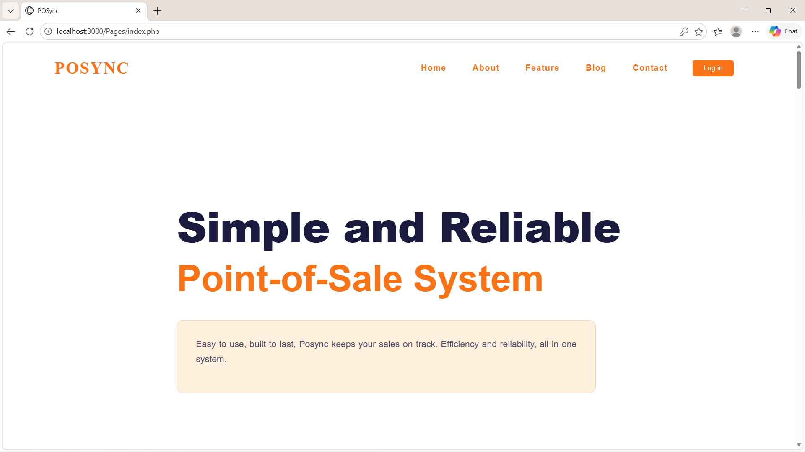

POSync
A web-based point-of-sale and inventory management system that keeps sales and stock in one place.

POSync is a web-based point-of-sale and inventory management system. It records sales transactions and keeps stock levels up to date, so a small business can see what it sells and what it has left in one place.
My role: Frontend Developer